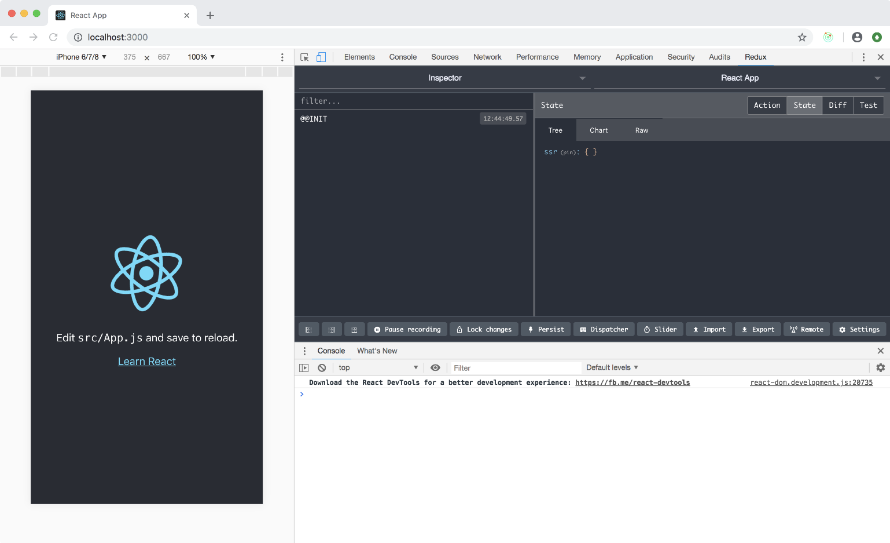

Add Redux
Redux is an important component of any server side rendered application as it allow us to progressively compose a state while resolving asynchronous calls such apis, code splitting, ect.
@marcopeg/react-ssr ships some helper functions that facilitate the setup.
Step n.1
Create an src/state.js file in your app:
import createSSRState from '@marcopeg/react-ssr/lib/create-ssr-state'
export const createState = createSSRState()
NOTE: further on we are going to add some juice to this file by setting up our app's core reducers and features.
Step n.2
Create an src/Root.js file in your app:
import React from 'react'
import { Provider } from 'react-redux'
import App from './App'
const Root = ({ store, ...props }) => (
<Provider store={store}>
<App {...props} />
</Provider>
)
export default Root
NOTE: this components is used to wire up your application, right now it implements the Redux' provider, but later on we will enrich it with the react-router provider as well.
This leaves the src/App.js to the real app's business logic, clean from infrastructural
nightmares :-)
Step n.3
Implement the redux state in your app's entry point src/index.js:
import React from 'react'
import ReactDOM from 'react-dom'
import './index.css'
import * as serviceWorker from './serviceWorker'
import { createState } from './state'
const boot = props => {
const renderApp = () => {
const Root = require('./Root').default
ReactDOM.render(<Root {...props} />, document.querySelector('#root'))
}
if (module.hot) {
module.hot.accept(renderApp)
}
renderApp()
}
createState()
.then(boot)
// If you want your app to work offline and load faster, you can change
// unregister() to register() below. Note this comes with some pitfalls.
// Learn more about service workers: http://bit.ly/CRA-PWA
// serviceWorker.unregister();
.then(() => serviceWorker.unregister())
.catch(err => console.log(err))
Hot Module Reload
The proposed setup enables Hot Module Reload in your CRA.
It is worth to mention that this is a very basic implementation and will not preserve the state of single components upon reload.
On the other hand, it preserves the redux state, so it will be a very nice experience to work out your application anyway. You might still need to do full reloads here and there when you change reducers or functions that are attached to DOM events.
Again, this is a very simple implementation that works nicely for most of the development challenges that I've been facing so far.
If you want more you should consider to work with a styleguide.
Check it out!
Just npm start the app and check out that the redux-devtools are working properly. Don't worry, they are going to be removed in production!

What do I get with Redux?
Here is the list of libraries that are going to be wired up for your convenience: